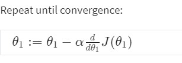
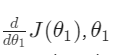
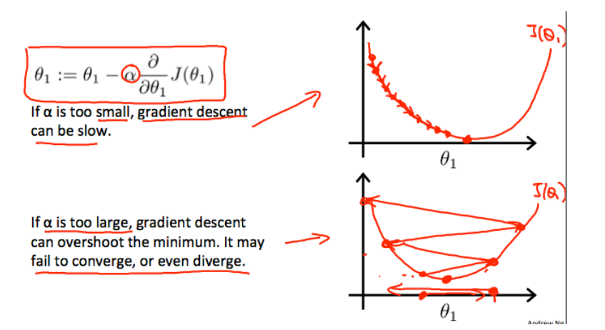
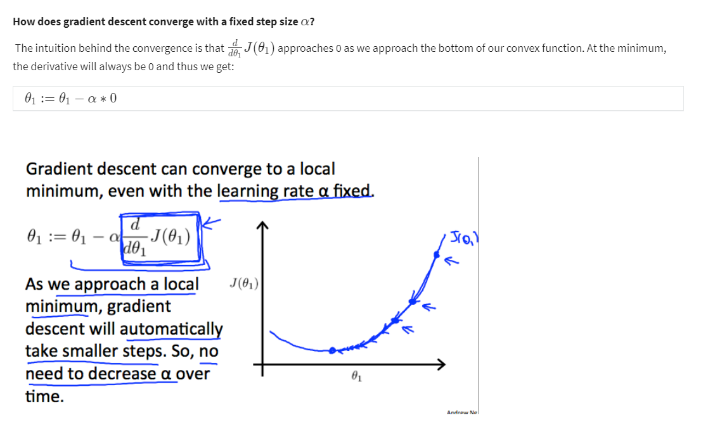

Gradient Descent Intuition
Function for a single parameter:

Regardeless of the slope's sign for  eventually converges to its minimum value. The following graph shows that when the slope is negative, the value of θ1 increases and when it is positive, the value of θ1 decreases

We should also adjust our parameter α to ensure that the gradient descent algorithm converges in a reasonable time.
The Failure to convers or too much time to obtain the minimum value imply that our step size is wrong.

